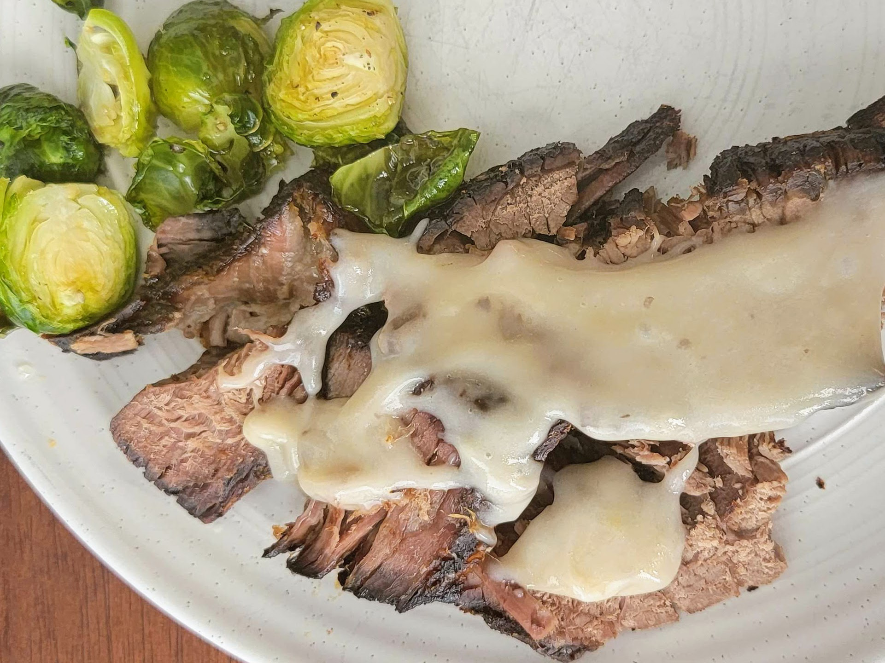

Rump Roast with Mushroom Gravy

Brief Description
A very moist rump roast with a creamy, delicious mushroom gravy.
Ingredients
Here's what you'll need:
- 1 (4 pound) rump roast
- 1 tablespoon meat tenderizer
- 1 teaspoon ground black pepper
- 1 teaspoon garlic salt
- ½ teaspoon salt
- 1 tablespoon Worcestershire sauce
- 2 tablespoons salted butter, cut into small pieces
- 1 medium yellow onion
- 1 (10.5 ounce) can Soup, cream of mushroom, canned, condensed, commercial
- 1 tablespoon cornstarch
Steps
or Directions
- Preheat the oven to 400 degrees F (200 degrees C).
- Place roast in a casserole dish and sprinkle with meat tenderizer, pepper, garlic salt, and salt. Drizzle with Worcestershire sauce and dot with butter.
- Cut onion in half. Pull apart petals and place on top of roast.
- Bake until roast is fully tender, 4 to 5 hours. An instant-read thermometer inserted into the center should read at least 145 degrees F (63 degrees C).
- Remove from the oven and transfer most of the juice to a saucepan for gravy. Add condensed soup and cornstarch. Heat over medium heat until thickened, 3 to 5 minutes.
- Slice roast and ladle gravy over individual servings.